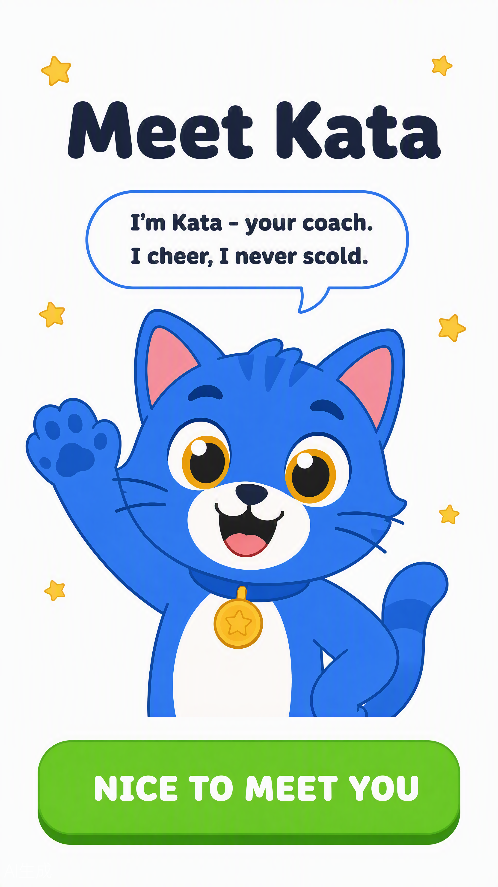
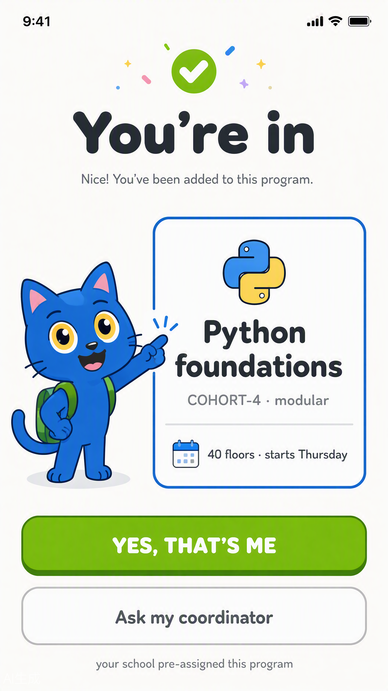
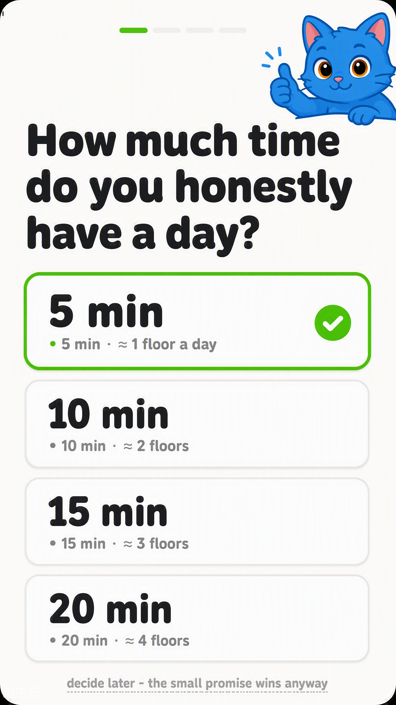
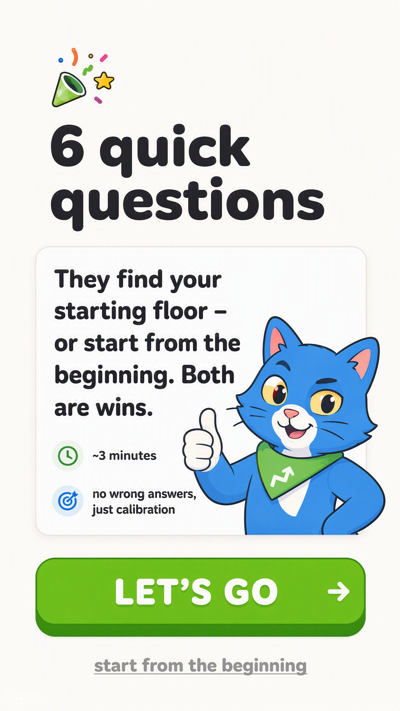
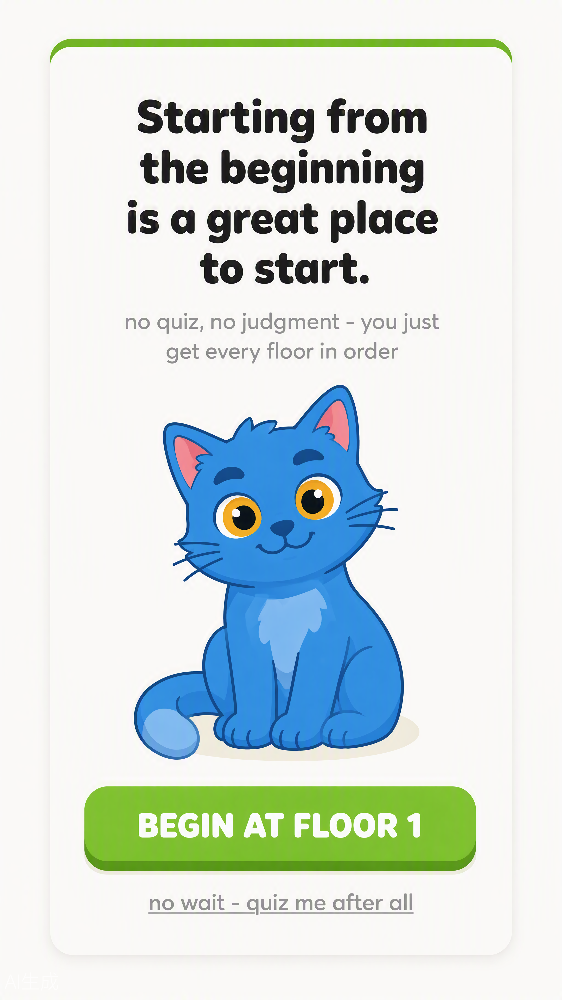
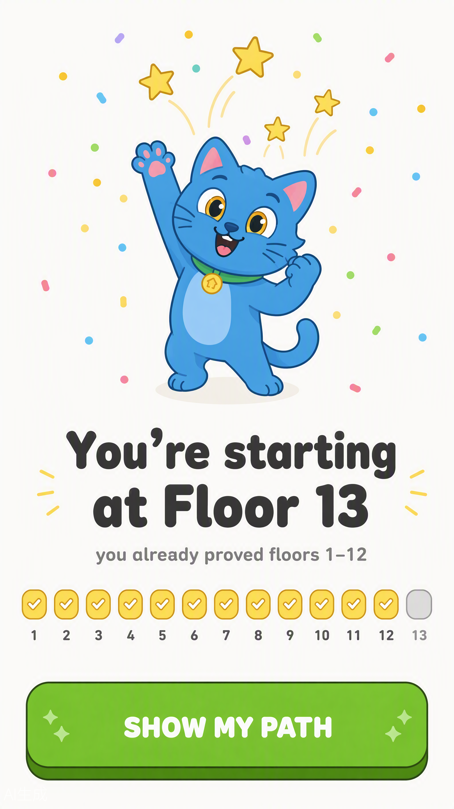
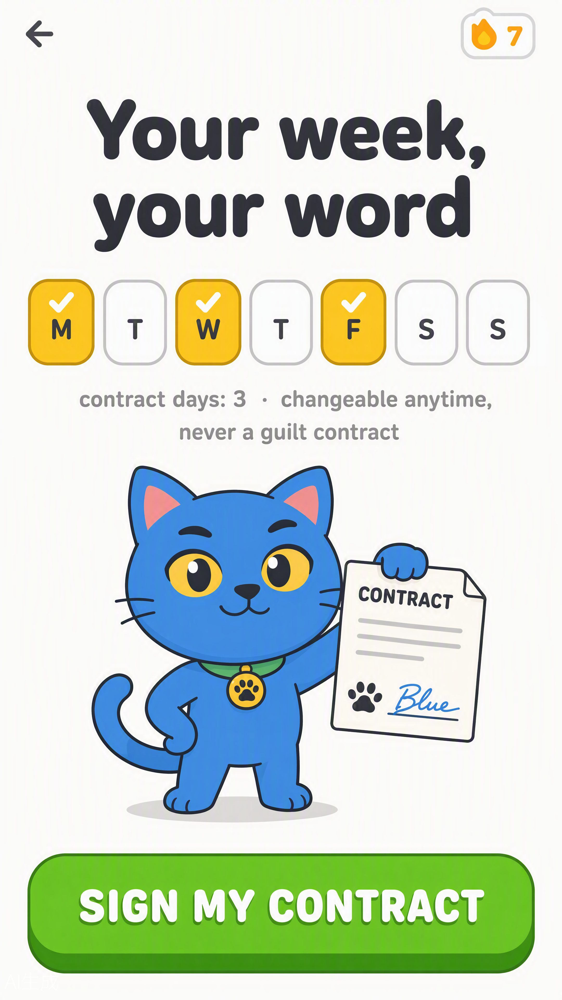
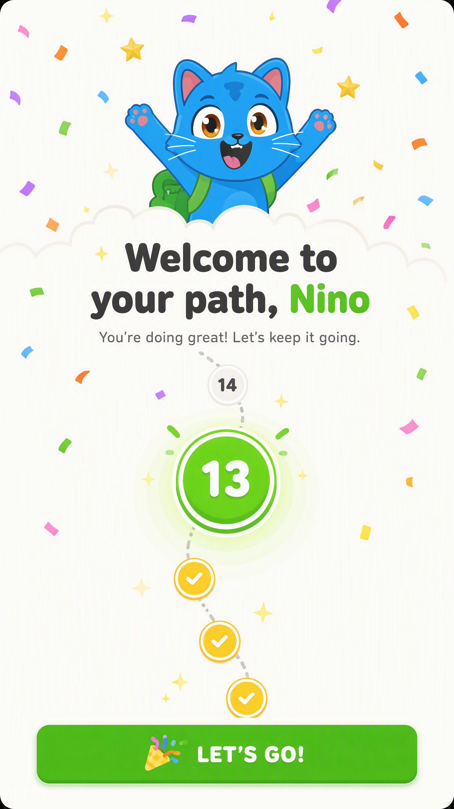
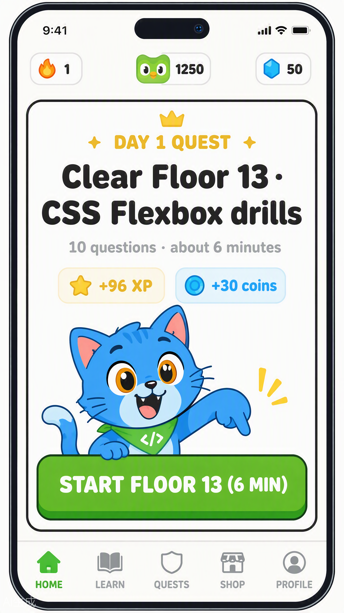
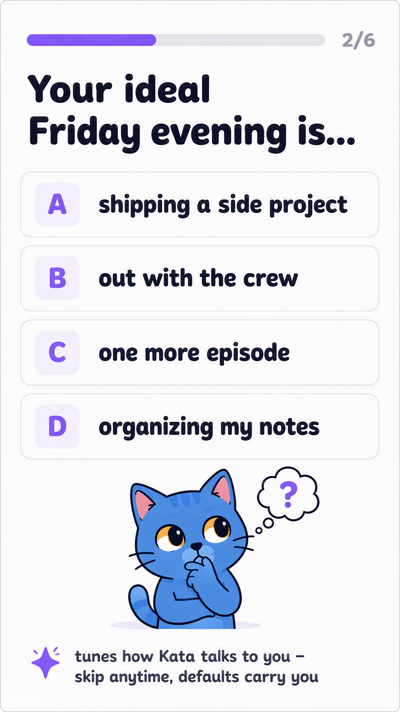

FLOW 9
Meet Kata → program confirm
RB-00 · RB-01The mascot introduces himself before any form (M5 law) — then the school’s pre-assignment is confirmed, not chosen (D-15). "Ask my coordinator" is the only escape hatch, never an enrollment picker.


FLOW 10
Daily goal
RB-025 min pre-marked as the deliberate LOW default: a kept small promise beats a broken big one. Skippable — "decide later" applies the default silently.

FLOW 11
Placement quiz
RB-03 · RB-04The quiz calibrates the starting floor; the skip card treats "from the beginning" as a win, never a confession. Both routes end in dignity.



FLOW 12
Placement result
RB-05The result names the floor AND what you already proved — floors 1–12 shown as banked, never as skipped.

FLOW 13
Week contract → path reveal
RB-06 · RB-07Pick your days (3 gold by default), sign it, and the roadmap appears personalized. The contract is "changeable anytime, never a guilt contract" — the streak’s foundation.


FLOW 14
Day-1 quest
RE-01 wired to contractThe first floor framed as a quest with printed stakes (+96⚡ +30⬡, ~6 min) — the loop starts today, not "someday".

FLOW 15
GitHub connect (optional)
RP-01Programming-track optional extra. Skip is prominent and final: "optional forever" — connecting later costs nothing.

FLOW 16
Archetype mini quiz
RB-12Six playful questions that tune Kata’s voice — in-app, not the external test. Skippable; defaults carry you.
